Excel × AI
長照行政課程
不用背函數，把資料和規則講清楚，
AI 寫公式，你負責驗算。
主管問我：「年底要盤點全機構積分，
誰換證會有問題？」
例行報表
固定的樞紐與公式可以沿用，
對大家都說不難。
偶爾才做的比對與盤點
每次都要重來，範本管不到。
今天就處理這一塊。
Excel × AI 長照行政課程
02 / 35
1
一套流程
交代清楚、一次做一步、驗算修正。換一份資料也能照做。
2
兩個案例
年度積分與到期提醒；交通車趟次核銷比對。
1
一份完整版檢查表
課後贈品。空白版貼上自己的資料就能用。
Excel × AI 長照行政課程
03 / 35
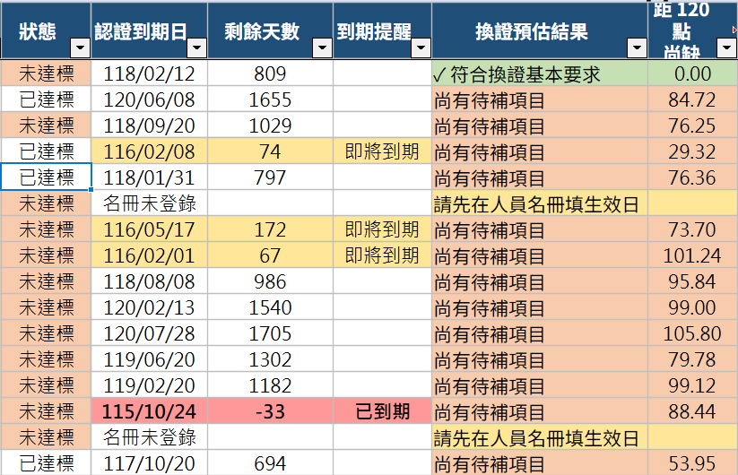
Excel × AI 長照行政課程
04 / 35
紅色：年度進度落後
今年積分未達機構自訂的進度參考
換證預估僅供參考，最終以平台及主管機關審查為準。
03
合作方式
一次一步，給公式讓我自己貼，等我說好了再繼續
04
已知答案
一兩個自己算得出來的結果，用來驗算
三步流程
① 交代清楚
→
② 一次做一步
→
③ 驗算修正
Excel × AI 長照行政課程
05 / 35
Excel × AI 長照行政課程
06 / 35
不給 AI
- 真實姓名、身分證字號
- 含真實個資的檔案
- 拍到真實個資的截圖
可以給 AI
- 欄位名稱與資料格式
- 虛構的示範資料（姓名中間字以 O 遮蔽、Z9 開頭的虛構編號）
- 白話寫成的規則
真實資料最後才貼進自己的 Excel。公式在你的電腦裡算，資料不必離開機構。
Excel × AI 長照行政課程
07 / 35
「合作方式」可以照這樣打👉
2
資料
哪張工作表、哪一欄是什麼、內容長什麼樣子
我要在 Excel 做一張「換證檢核」表，請你一步一步帶我完成。
# 我要的成果
- 我把平台匯出的積分表貼進「貼上區」工作表，檢核結果就自動更新。
- 請給我公式讓我自己貼，不要直接幫我算出結果。
- 我用舊版 Excel，不要用 XLOOKUP、FILTER、LET、UNIQUE。
- 可以用輔助欄，寧可多幾欄，不要一條很長的公式。
# 資料（附檔為去識別化資料）
- 「貼上區」資料從第 4 列開始：E 身分證字號、G 課程日期、
I 實施方式、K 課程屬性、L 課程類別、M 積分、N 認可狀態
- 課程日期是民國年文字，積分也是文字，例如 0.50
- 「人員名冊」：B 身分證字號、C 認證生效日（例如 112/09/01）
# 換證規則（節錄）
- 只算認可狀態為「符合」且積分大於 0 的課，課程日期取起日
- 採計總積分達 120 點
- 品質＋倫理＋法規合計至少 24 點，超過 36 點只採計 36 點
- 四大核心各至少 1 點，且合計至少 10 點
- 網路課程最多只採計 80 點
- 到期日＝生效日加 6 年減 1 天
（其餘規則同樣一行一條列在這裡）
# 第一件事
先不要給公式。請列出你打算怎麼做：需要哪些工作表、哪些輔助欄、分成幾個步驟。我確認後再開始。
Excel × AI 長照行政課程
08 / 35
原始報表的四個特點
4
積分欄格式看起來是數值，卻是文字；
認可狀態不一定是「符合」
目標：
同個人員的積分數加總，且一人一列呈現。
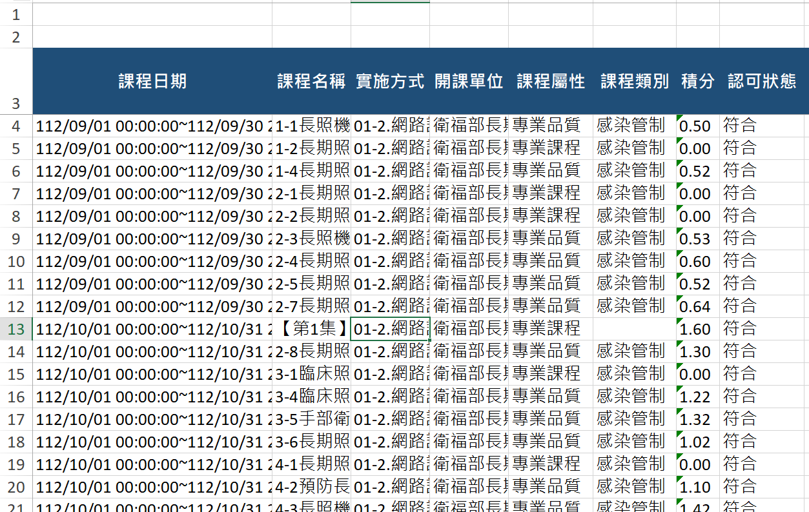
Excel × AI 長照行政課程
09 / 35
案例一｜人員名冊
平台報表沒有「認證生效日」，所以要建自己的「人員名冊」
人員名冊的三個特點
1
一人一列，自己填 A 到 C 欄：姓名、身分證字號、認證生效日
3
認證生效日也是民國年文字，例如 112/09/01
用途：
用身分證字號，把每個人的認證生效日帶進人員總表。
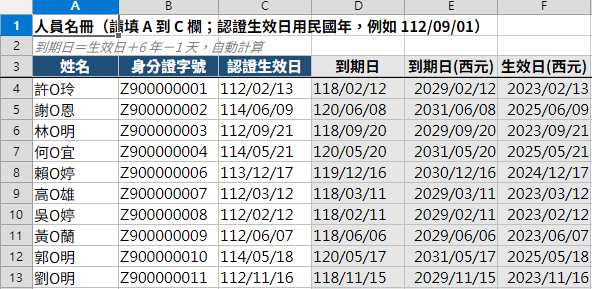
1
只算認可狀態「符合」且積分大於 0 的課；課程日期取起日。
3
品質＋倫理＋法規合計至少 24 點；超過 36 點只採計 36 點。
4
四大核心（消防安全、緊急應變、感染管制、性別敏感度）各至少 1 點，合計至少 10 點。
這六條就是起手式「# 換證規則」那一段。課堂版先不處理文化課程，完整規則放在課後的完整版檢查表。
Excel × AI 長照行政課程
10 / 35
Excel × AI 長照行政課程
11 / 35
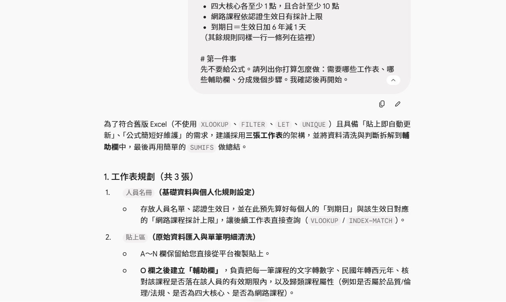
看規劃時確認
- 步驟順序跟你的規則對得上
- 沒有用到舊版沒有的函數
- 是一步一步來，不是一次全給
沒問題就回這一句
規劃可以，請從第一步開始。
Excel × AI 長照行政課程
12 / 35
步驟 1 課程日期取起日
「貼上區」工作表的 G 欄是課程日期，內容是文字，長這樣：
112/09/01 00:00:00~112/09/30 23:59:00
前面的 112 是民國年。我想在 Q4 取出開始那一天，變成 Excel 的日期。
例如上面這筆要變成 2023/9/1。
獲得結果
步驟 2 只算符合的課，文字轉數字
「貼上區」M 欄是積分，是文字格式，例如 0.50。N 欄是認可狀態。
請在 R4 顯示：認可狀態是「符合」就把積分變成數字，其他一律是 0。
目的為了
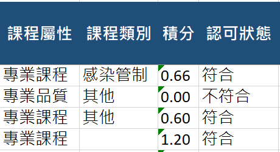
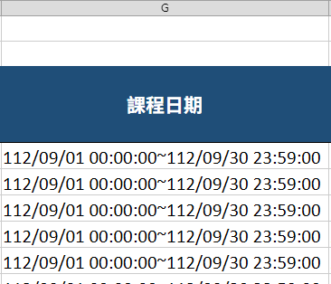
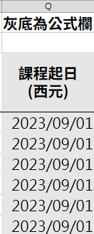
→
Excel × AI 長照行政課程
13 / 35
我怎麼問｜第一問：三種課加起來
「貼上區」E 欄是身分證字號，K 欄是課程屬性，R 欄是有效積分。
「人員總表」C 欄是身分證字號。
我想在人員總表 V6 算出這個人「專業品質、專業倫理、專業法規」三種課的有效積分合計。
例如 Z900000001 應該是 71.77。
我怎麼問｜第二問：夠不夠 24 點
V6 是品質倫理法規合計。我想在 W6 顯示：滿 24 點就顯示「✓」，不到就顯示「尚缺」和還差幾點。
拿到回答後：先對 Z900000001 是不是 71.77。最常見的錯是只加到其中一種課。
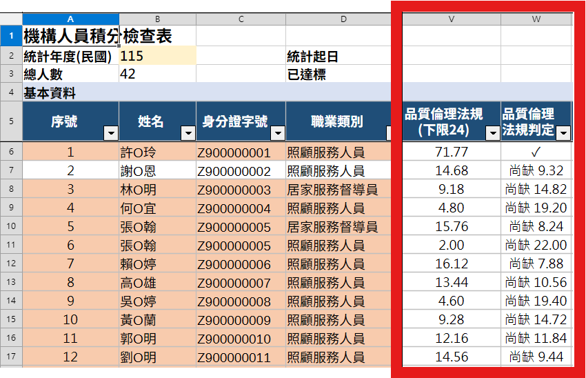
結果｜人員總表 V、W 欄
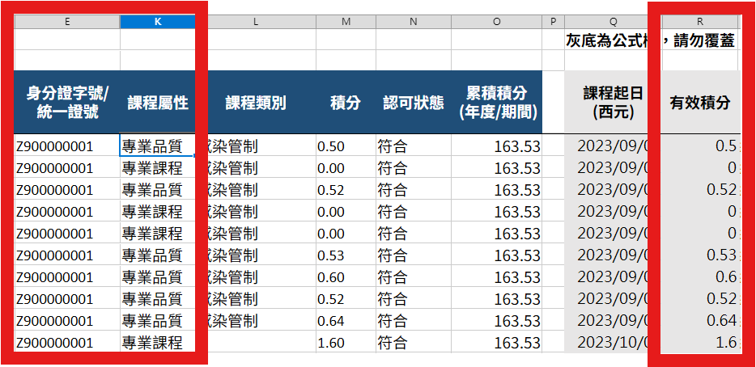
比對｜貼上區 E、K、R 欄
Excel × AI 長照行政課程
14 / 35
我怎麼問｜第一問：一科一欄
「貼上區」L 欄是課程類別。四大核心是：消防安全、緊急應變、感染管制、性別敏感度。
我想在人員總表 X、Y、Z、AA 分別算出這個人這四種課的有效積分合計，請一次給我一欄。
例如 Z900000001 的感染管制應該是 30.79。
我怎麼問｜第二問：合計與判定
AB欄 是四科合計。我想在 AC6 顯示：有哪一科不到 1 點，就列出缺哪幾科；四科都有但合計不到 10 點，就顯示還差幾點；都符合顯示「✓」。
拿到回答後：用右邊三位對三種結果，三種都對了才算完成。
結果｜
人員總表 X ~ AC 欄
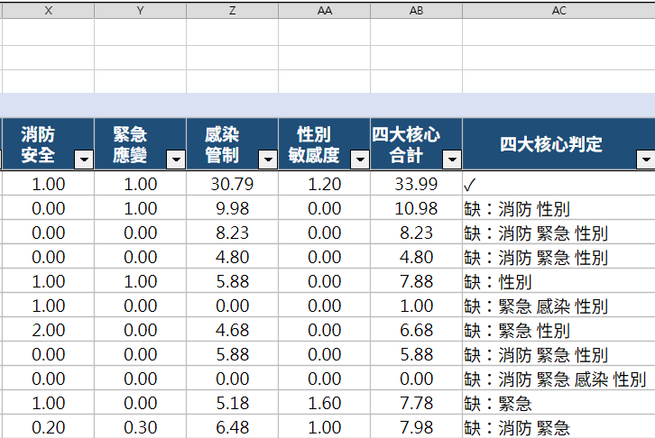
Excel × AI 長照行政課程
15 / 35
我怎麼問｜第一問：人員名冊算到期日
「人員名冊」C 欄是認證生效日，是民國年文字，例如 112/09/01。
請在 E4 算出到期日：生效日加 6 年再減 1 天。例如 112/09/01 要變成 2029/8/31。
比對｜人員名冊
我怎麼問｜第二問：人員總表帶入生效日
「人員名冊」B 欄是身分證字號，C 欄是認證生效日，資料在第 4 到 303 列。
我想在人員總表 S6 用 C6 的身分證字號找到這個人的生效日，找不到就顯示「名冊未登錄」。
結果｜人員總表
![image.png]()
Excel × AI 長照行政課程
16 / 35
我怎麼問｜第三問：網路課程實際採計多少
網路課程最多只採計 80 點。我想在 T6 顯示這個人實際採計的網路積分：品質倫理法規超過 36 點的部分先從網路課程扣掉，剩下的超過 80 就只算 80。
例如 Z900000001 應該是 64.76。
拿到回答後：對照右圖，Z900000001 是 64.76。
對照右圖：網路積分有多少看 T、U 兩欄
T
網路實採：6 年效期內實際採計的網路積分，最多 80 點
U
網路超過未採計：超過 80 的部分，從採計總積分扣掉
結果｜人員總表 R～U 欄
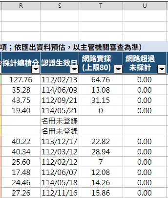
Excel × AI 長照行政課程
17 / 35
第一問：公式會很長，請 AI 先拆輔助欄
R6 要算「採計總積分」：全部有效積分，扣掉品質倫理法規超過 36 點、網路課程超過 80 點的部分。請先告訴我需要哪些輔助欄，一次給我一欄。例如 Z900000001 應該是 127.76。
第二問：還缺幾點
R6 是採計總積分。我想在 Q6 顯示距離 120 點還缺幾點，已經超過就顯示 0。
第一列 Z900000001：可以從各欄條件通過後獲得與120點的差距。品質倫理法規 71.77 只採計 36、網路超過 0 → 採計總積分 127.76，距 120 點尚缺 0（預估）
| 狀況 | 貼回去的話 |
|---|
| 公式出現錯誤訊息 | 「R4 出現 #VALUE!。它參照的 M4 內容是 0.50，靠左對齊。」 |
| 沒報錯但數字不對 | 「Z900000001 的品質倫理法規應該是 71.77，我得到的數字不一樣。」 |
| Excel 不認得某個函數 | 「我的 Excel 沒有這個函數，請改用舊版也能跑的寫法。」 |
| 公式太長 | 「請拆成兩到三個輔助欄，每欄只做一件事。」 |
| 對話太長 | 「請整理目前進度，我要貼到新對話接續。」 |
也可以直接貼截圖。截圖要含欄名列號，且不得出現真實個資。
常見例子：跳過步驟 2 直接加總 M 欄，公式不報錯，結果卻是 0。
案例一｜驗算示範
驗算怎麼做：先有答案，再逐步對照
1
挑人
挑兩三位情況不同的同仁：碰到上限的、沒碰到的、快到期的。
2
先拿答案
做表之前，到平台查明細或手算一次，把正確數字寫下來。
3
逐步對照
每做完一步，就填一次「我得到」。對不上就停下來。
| 項目 | 應該是 | 我得到 | 結果 |
|---|
| 全部有效積分 | 163.53 | 163.53 | ✓ |
| 品質倫理法規 | 71.77 | 0 | ✗ 回報 AI |
四大核心
消防／緊急／感染／性別 | 1／1／30.79／1.2 | 1／1／30.79／1.2 | ✓ |
| 網路實採 | 64.76 | 64.76 | ✓ |
| 採計總積分 | 127.76 | 127.76 | ✓ |
✗ 出現時先停下：把「應該是、我得到」貼回 AI，修好再做下一步。
Excel × AI 長照行政課程
19 / 35
Excel × AI 長照行政課程
20 / 35
AI 會錯，
而且不會說錯哪裡。
做法：挑兩三位你已經知道答案的同仁，逐一對照。
分工：AI 寫公式，你負責驗算。對了才貼上真實資料。
案例二｜核銷前的確認
每個月核銷前，要對哪些資料？
平台匯出・申報了什麼
照顧組合服務費用項目清冊
看：個案姓名、申報次數、部分負擔費用
交通車系統・實際跑了什麼
交通車系統資料
看：搭乘人姓名、每一趟的紀錄與金額
兩邊並排，每位個案確認三件事
1
人：兩邊都有這位個案嗎？
有搭車卻沒申報，或有申報卻沒搭車
2
次數：申報次數＝實際趟數？
清冊直接寫次數，交通車要一趟一趟數
3
金額：部分負擔加總一樣嗎？
兩邊各自加總，再相減看差多少
案例一是「一份資料對規則」；案例二是「兩份資料互相對」。
照顧組合服務費用項目清冊
衛福部平台匯出。同一位個案可能有好幾列，次數要加總。
交通車系統資料
交通車系統匯出。一趟一列，次數要用數的。
→
要做出來的表
不相符名單
- 每位用戶的次數是否相同
- 每位用戶的金額是否相同
- 只列出對不上的人
Excel × AI 長照行政課程
22 / 35
Excel × AI 長照行政課程
23 / 35
提問原文（姓名已遮蔽，另附兩份檔案）
# 目標
交通車趟次核銷比對
# 流程
1. 清冊擷取 C 欄姓名、K 欄次數、N 欄部分負擔費用。同一個姓名會有多筆紀錄，要把 K 欄次數合併計數。如圖一尤O章，K 欄分別有 14 次、2 次，加總後是 16 次。
2. 交通車系統資料取 B 欄姓名、K 欄金額。次數是計數 B 欄相同姓名的次數，並針對該用戶加總金額。
3. 把兩份結果比對金額以及次數是否相同，在另一張表產出不相符的用戶名。
圖一：清冊裡同一人有兩列（示範資料）
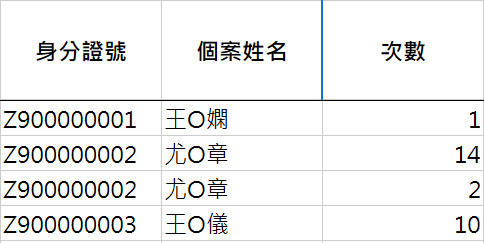
資料：有。兩份匯出檔，講明哪一欄是什麼
規則：有。三條，一行一條
已知答案：有。尤O章應該是 16 次
合作方式：這次沒寫。AI 一次做完整份工具
1
交通車資料的姓名後面多了「★」
直接比會全部對不上，要先去掉
2
兩份檔案的標題列位置不同
清冊在第 5 列，交通車在第 1 列
3
交通車資料沒有身分證號
只能用姓名比，同名同姓會被合併
4
「搭乘狀況」這次全部是「完成」
若有取消的趟次，規則要再補一條
你寫的規則只涵蓋你想得到的情況。資料裡的意外，要請 AI 回報，再由你決定怎麼處理。
Excel × AI 長照行政課程
25 / 35
案例二｜工具的設計
資料怎麼從五張工作表分頁算出結果
→
整理區
兩份資料在這裡整理，不須要更動：這區會去掉「★」和空白，列出不重複的姓名。
→
→
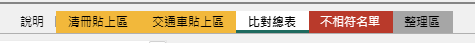
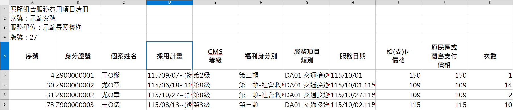
Excel × AI 長照行政課程
26 / 35
案例二｜工具的設計
資料怎麼從五張工作表分頁算出結果
→
整理區
兩份資料在這裡整理，不須要更動：這區會去掉「★」和空白，列出不重複的姓名。
→
→
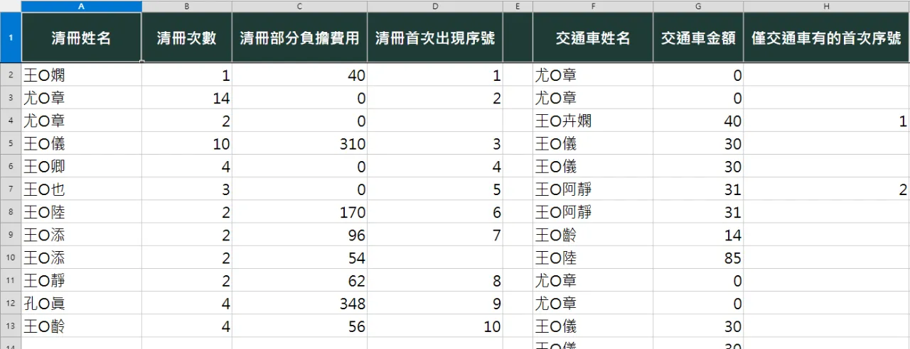
Excel × AI 長照行政課程
27 / 35
案例二｜工具的設計
資料怎麼從五張工作表分頁算出結果
→
整理區
兩份資料在這裡整理，不須要更動：這區會去掉「★」和空白，列出不重複的姓名。
→
→
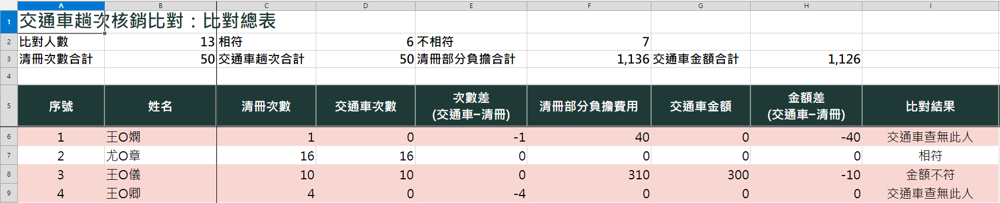
Excel × AI 長照行政課程
28 / 35
案例二｜工具的設計
資料怎麼從五張工作表分頁算出結果
→
整理區
兩份資料在這裡整理，不須要更動：這區會去掉「★」和空白，列出不重複的姓名。
→
→
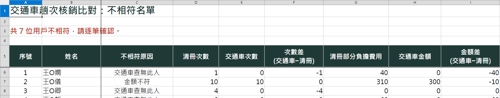
Excel × AI 長照行政課程
30 / 35
一、已知答案
尤O章：14 ＋ 2 ＝ 16 次
交通車也數到 16 趟，結果「相符」。
二、總數
兩邊都是 50 趟
趟數對得上，沒有整列漏算。金額 1,136 對 1,126，差 10 元。
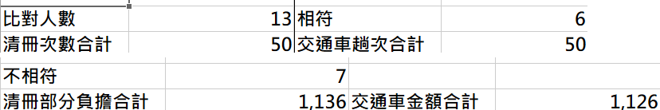
三、結果合不合理
13 人有 7 位不相符？太多了
回頭看原因：真正金額不符的只有王O儀（差 10 元）。其他 6 位是 3 組姓名寫法不同，例如王O嫻／王O卉嫻，兩邊互相「查無此人」。
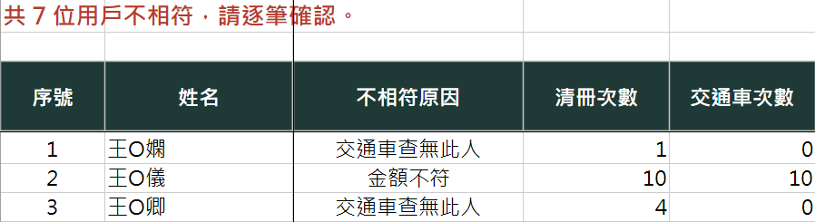
用欄位位置
「K 欄，第 6 列開始」
- 公式短，好懂，好教
- 匯出格式不變就一直能用
- 版面一變會抓到別欄，而且不會報錯
用項目名稱
「標題叫『次數』的那一欄」
- 欄位順序變了也對得上
- 公式比較長
- 標題改名或含換行會找不到，但會直接顯示錯誤
我們的工具用的是位置：清冊的 C、K、N 欄，交通車的 B、K 欄。它不會去讀標題文字。
匯出格式固定，每個月都是同一種報表
用位置，再加一格標題檢查
拿到公式後，追問這一句
你的公式是用欄位位置，還是用標題名稱來找資料？
如果匯出檔多了一欄，結果會怎樣？
標題檢查是什麼
確認 K5 還是「次數」、N5 還是「部分負擔費用」。不是就顯示警告，先別相信結果。
共通點：偶爾才做、每次都要重來的加總、查找與比對。
Excel × AI 長照行政課程
33 / 35
掃描 QR code
填寫課後問卷
領取贈品
Excel × AI 長照行政課程
34 / 35
第一步
交代清楚
去識別化資料、條列規則、合作方式
第二步
一次做一步
AI 先給規劃，確認後逐步給公式
課後贈品
積分試算的EXCEL檔案
長照機構人員積分分析管理系統
名冊資料存放在你自己的 Google 雲端硬碟，本系統不會保存任何人員個資。登入後即可讀取你有權限的名冊。
Excel × AI 長照行政課程
35 / 35
前往網頁
![image.png]()
![image.png]()